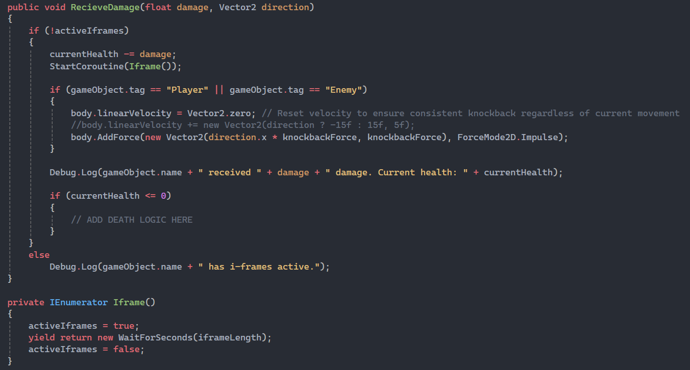
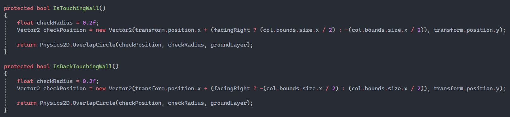
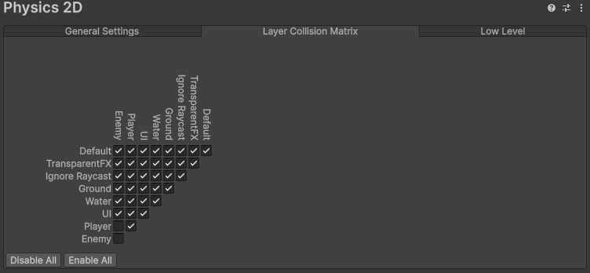

The Concept
Crimson Tomb is a love-letter to the classic Castlevania games, with a slightly more modern twist.
Taking inspiration from the older Castlevania games, like Castlevania: The Adventure on the gameboy and its sequel, in the way that it structures the games in several different castles before being able to progress to Dracula's castle,
this game takes place across five dungeons, with the final boss being in the fifth and final dungeon. The key difference here though, is that this game has rewards at the end of each one, being able to unlock new abilities after completing it.
This game allows players to go through dungeons in whatever order they please. This seems like it would make the abilities redundant, however each dungeon will have several paths.
This allows players to get the abilities in one dungeon, and use them to take shortcuts in another one, letting the player able to decide whether they want to take a shortcut, or fight the boss at the end of each section.
Story Synopsis
A long time ago, there was a powerful Presence whose blood was used to heal wounds, prolong life and raise the dead.
The rulers of a kingdom built a city over its tomb and divided its body into four sacred sanctums. They used the blood of The Presence, which turned them all into monsters over centuries of use.
Centuries later, after the residents have become unable to sustain the seals themselves, the seals weaken and the protagonist, an Executioner of the Old Rites, was sent to destroy the seals, execute The Presence, and free the city from its eternal suffering.
Week 1
I spent most of the first week working on the player and all their abilities, as well as three different enemy types.
The player and the enemies all inherit from a parent Creature class, which has the basic stats such as health and damage etc. as well as some checks for if they are on the ground and the like.
It does hold a few things the player doesn't need, like a method to find the player, which upon looking back should have been in a subclass of the Creature class of its own called Enemy which the different enemy types should inherit from.
The enemies didn't have much interesting code as their logic is quite simple but effective, the fun parts come from the player.
I added knockback and I-frames similar to the original Castlevania games, and it was quite fun to implement.
A small challenge I faced here was the fact my player script had overwritten the knockback if the player held any horizontal input.
I had it written so that it stops any horizontal movement if there is no horizontal input so that the player doesn't just slide around the floor.

When implementing the sprinting ability I decided toggle sprint would be easier for the player, as this game is targeted for PC so holding down shift to could get pretty exhausting after a while. When stopping movement I also decided to stop sprinting, however it could get pretty annoying to switch directions and have to start sprinting again manually, so a fun solution I found was to start a coroutine to wait half a second, and then check if the player was moving, turning it off if there was nothing.

I initially faced an issue with the player sticking to walls if there was movement towards the wall, but it was an easy fix by adding a material to the player where the friction was set to zero. This gave me the idea to change the friction of the material when trying to wall slide, but that gave an incosistent fall speed due to the fact the player would have different velocities depending on how early or late into a jump or fall they were, so the solution came down to a few lines of code. I just set the vertical velocity of the player to a set amount if they were intending to wall slide. While adding the wall slide I had to check if the player was facing the wall to turn them around, so that added a new check, but then the player would add input to stay in the wall slide instead of just falling, so I added another check to see if the player's back is touching the wall. The wall check ended up being used in the walker enemy so it would turn around if it touched a wall so it stopped running in place.

The player and enemy collision was a fun challenge. Getting them to interact and deal damage was no issue, the issue arrived when I wanted the player to take damage when touching an enemy, but not collide with their hitboxes, as that would become a problem if they were surrounded by enemies and just collided with them and ended up stuck on top of them. I tried changing the enemy hitbox to a trigger, but of course they just ended up falling through the floor. The solution was a Unity feature I wasn't aware of until now, involving layers.
Layers in Unity can allow users to select which objects can interact with eachother, and can be toggled in the collision matrix available in the project settings. This intially created a new issue, the enemies couldnt actually deal damage to the player and vice versa, as toggling off layer interaction disabled every kind of interaction, uncluding scripts. The solution was to make an empty child of the enemy with a trigger hitbox, making it the same size as the parent, and making a new script just to handle damage when interacting with the player, and changing the tag on it back to default as making a child makes in instantly inherit the parents layer and tag.

Week 2
The tasks for week 2 were just sprite creation of the player and enemies and level design, of course I needed sprites for the level so I made a simple tilesheet consisting of five tiles. My work on the sprites started the week prior, as I had finished it all early.
The player prite was just a simple trace over Trevor from Castlevania III, as well as the enemies all being traced from the same game. All the traces were made only of their silhouettes, with the features and colours being figured out myself.
On the other hand, all the tiles are completely original. I wanted to keep the style similar to the series as it is what inspired this game the most.
The rest of the week was spent in Unity, where I animated all the characters, and made the central hub and the tutorial leading up to it.
The tutorial consists of two parts, the first teaching the player the controls for movement and attacking, where the second part was a short parkour section while introducing the other enemy types.
The hub is where the player will be able to exit to all the available dungeons which are not yet implemented at the moment.
There was little code written this week, but I did make it possible for the player to move to another area by loading a new scene, which will later have a transition made. There were also slight tweaks to stats like speed and jump height for the player.